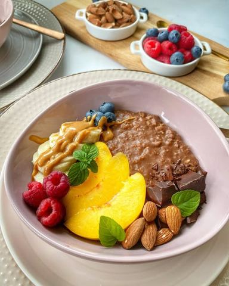

Moja beleška
Sačuvano
Ocena
Sastojci
- Za dve činije ove kaše potrebno je
Priprema
U šerpicu sipam mleko i dodam ovsene pahuljice, ostavim na tišoj vatri da se malo prokrčka pa u to dodam jednu izgnječenu bananu i pola jabuke iseckane na sitnije kockice. Ostavim još neko vreme na potpuno tihoj vatri lagano mešajući pa u to dodam red kvalitetne crne čokolade, promešam da se lepo sve istopi i poveže i sklonim sa vatre. Onda po ukusu dodam šaku svežeg voća koje volim i malčice pečenih lešnika, pečenih badema ili listića badema. Jako je interesantan i kokos čips. Dodavanjem voćkica na kraju dekorišete činiju i onda ubedite i ostale ukućane da isprobaju, ja sam eto oduševljena što kod nas jedu i oni najveći izbirljivci 🥰
Originalni opis sa Instagrama
Imate li i vi predrasude prema odredjenoj vrsti hrane..? Ili čak donesete zaključak kako vam se nešto ne dopada a da prethodno niste ni isprobali? Evo meni recimo godinama nije padalo na pamet da jedem kaše za doručak, a onda sam uzela stvar u svoje ruke i napravila kombinaciju koja je za mene pobednička i od tada je na meniju bar dva puta nedeljno. Ako ste i vi jedni od onih koji pripadaju toj grupaciji, možda bi trebalo da razmislite o tome da joj date šansu 🤗 Za dve činije ove kaše potrebno je: •230 ml bademovog mleka •40gr sitnijih ovsenih pahuljica •1 banana •pola jabuke iseckane na sitnije kockice •1 red crne čokolade 70% kakaa ili dve kašičice kvalitetnog kakaa •kašičica kikiriki putera •sveže voće po izboru (dok ima malina i borovnica meni su one neizostavne 🥰) •koštunjavo voće (najčešće to bude pečeni badem ili lešnik) U šerpicu sipam mleko i dodam ovsene pahuljice, ostavim na tišoj vatri da se malo prokrčka pa u to dodam jednu izgnječenu bananu i pola jabuke iseckane na sitnije kockice. Ostavim još neko vreme na potpuno tihoj vatri lagano mešajući pa u to dodam red kvalitetne crne čokolade, promešam da se lepo sve istopi i poveže i sklonim sa vatre. Onda po ukusu dodam šaku svežeg voća koje volim i malčice pečenih lešnika, pečenih badema ili listića badema. Jako je interesantan i kokos čips. Dodavanjem voćkica na kraju dekorišete činiju i onda ubedite i ostale ukućane da isprobaju, ja sam eto oduševljena što kod nas jedu i oni najveći izbirljivci 🥰 Prijatno! 🌸 • • • #savršendoručak #idejezadoručak #zdravdoručak #slatkidorucak #slatkidorucakzaslatkidan #ovsenakaša #čokoladnakaša #ovsenakasasavocem #ukusnoizdravo #enjoyyourebreakfast #breskfasttime